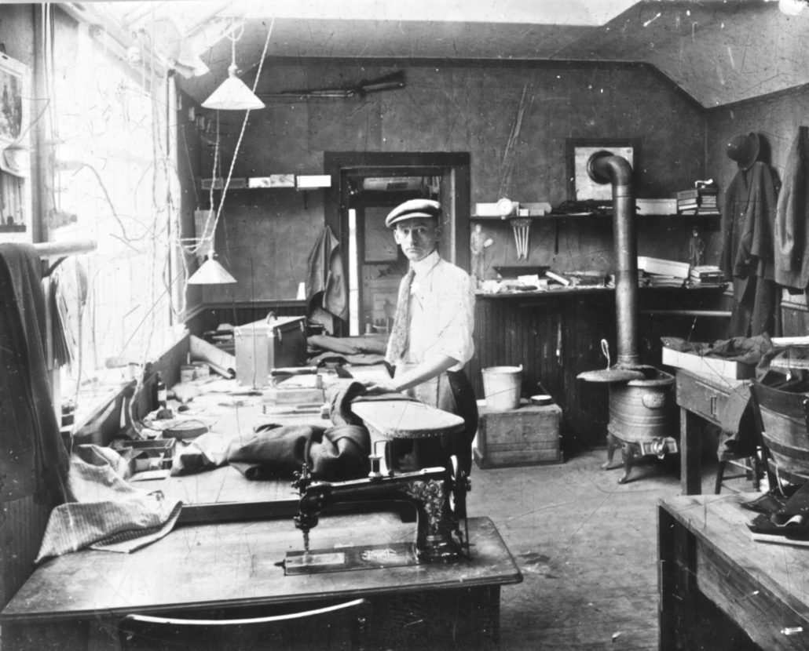

Our Story
Midnight Atelier was founded on the belief that exceptional tailoring is more than a service—it is a craft. In a world dominated by fast fashion and disposable trends, we remain committed to creating garments that embody quality, character, and timeless sophistication.
Every client who walks through our doors brings a unique story, lifestyle, and vision. Our mission is to transform those aspirations into garments that reflect individuality while delivering impeccable fit and enduring elegance.
By combining traditional tailoring techniques with modern refinement, Midnight Atelier creates pieces designed to be worn with confidence and remembered for years to come.
